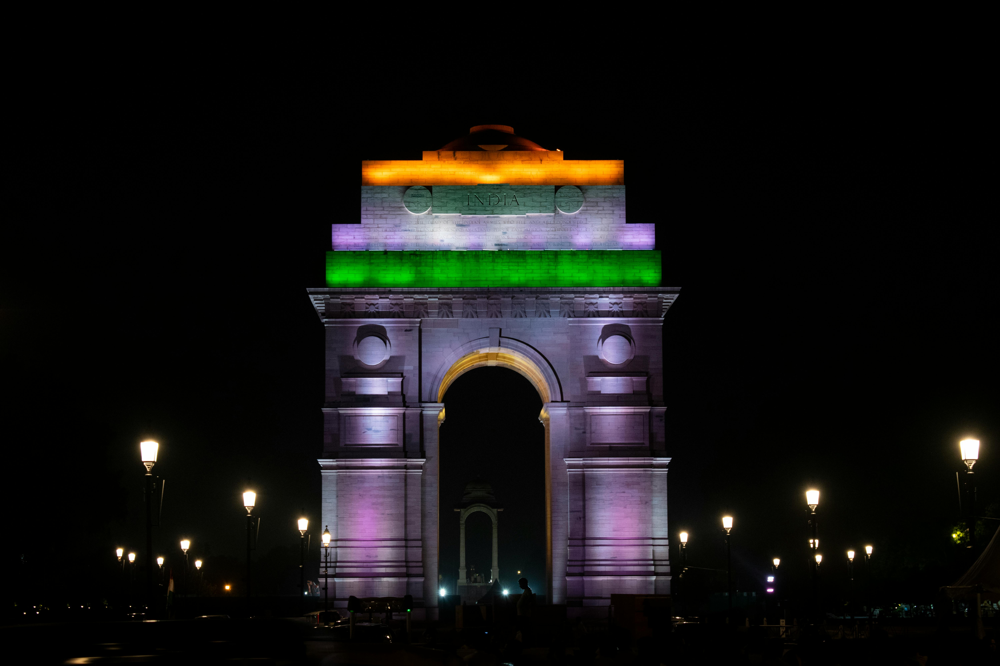

Indian Gate Images
The India Gate is a war memorial located in New Delhi, India. It was built in 1931
and designed by Sir Edwin Lutyens, who was also the principal architect of New Delhi.
The India Gate serves as a memorial to 70,000 soldiers of the British Indian Army
who died in World War I and the Third Anglo-Afghan War.
The monument stands at a height of 42 meters and is situated on the eastern edge of the
ceremonial axis of New Delhi, formerly known as Kingsway. The structure is made
of red and pale sandstone and bears inscriptions of the names of soldiers who sacrificed
their lives during the wars.
